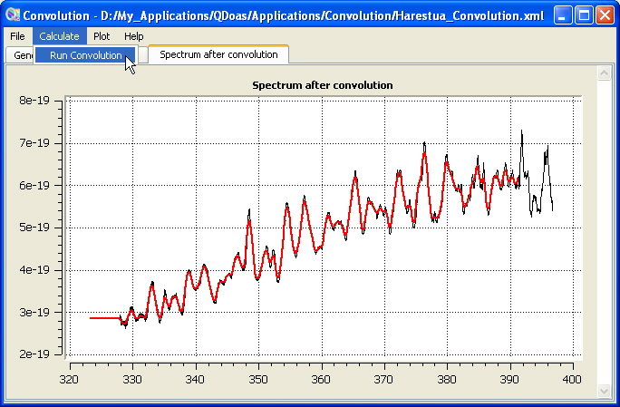

QDOAS Convolution/Filtering Tool (convolution)
The Convolution/Filtering tool (convolution) gives the possibility :
- to convolve spectra and cross-sections;
- user-defined slit functions and analytical line shapes are accepted;
- convolution with I0 correction is supported;
-
to shift the calibration grid before convolution;
- to create an effective slit function taking into account the (finite) resolution of the source spectrum (using a FT deconvolution method):
- to apply a low-pass or a high-pass filter to the convolved cross-section before saving it.
Convolution/Filtering tool options are distributed in three pages :
| General | general options (convolution type, input/output files...) |
| Slit | selection and parameterisation of the slit function; |
| Filtering | selection and parameterisation of the filter; |
Once the parameters specified, the convolution is performed using the Calculate → Run Convolution option from the menu bar. The original cross section and the convolved one (respectively in black and in red on the plot below) are displayed. In order to avoid edge effects, the convolution has been performed on a larger interval but only the part of the convolved spectrum defined on the final grid is output. If a filtering has been applied, another plot follows, with the original cross section and the resulting one after convolution and filtering.

Convolution of NO2 cross-section [Vandaele et al.] with a gaussian (FWHM : 0.5 nm)